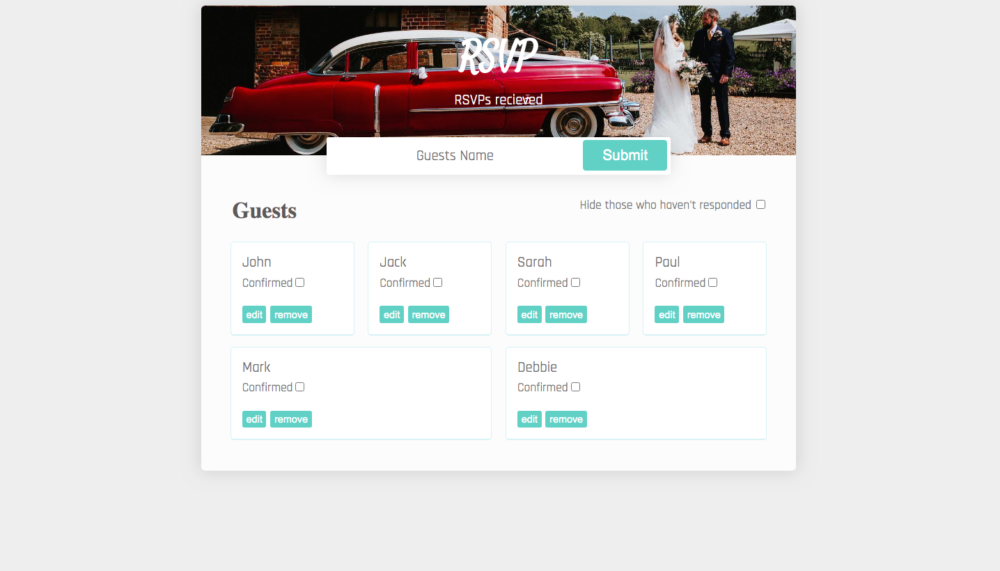
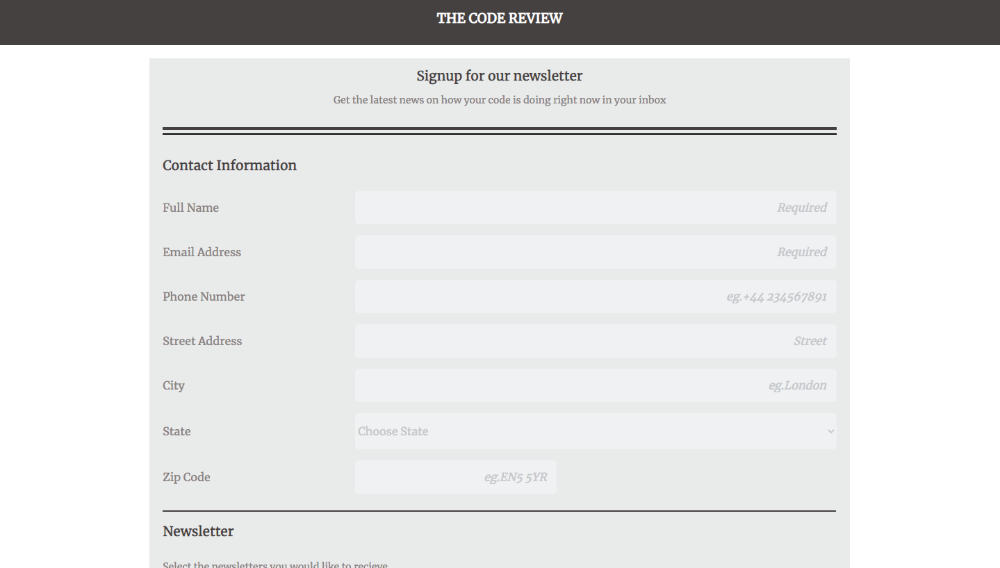
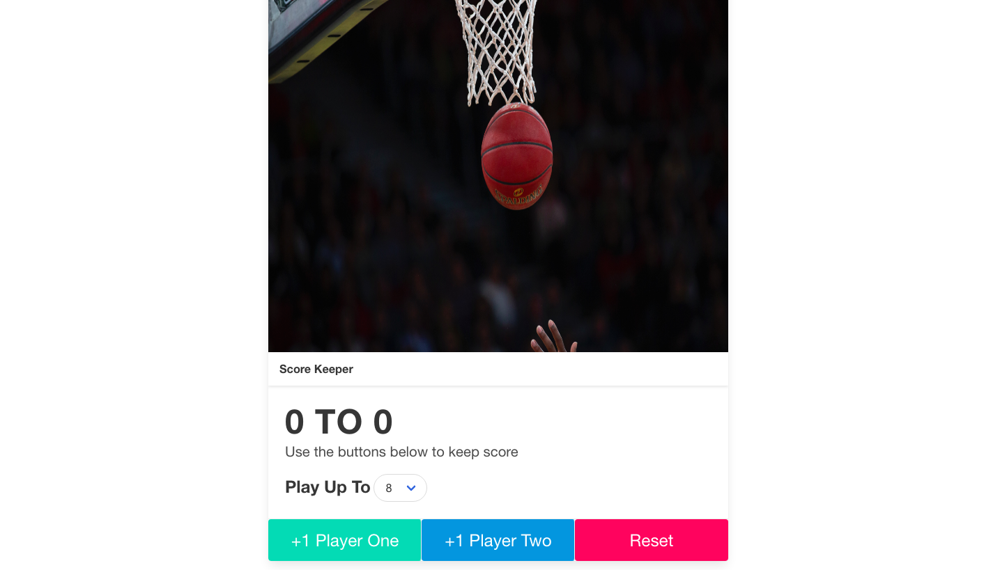

Take a Look At My Side Projects

RSVP Tracker App
An app which can be used to track RSVPs. The app allows the user to add, edit and delete guests names aswel as marking which guests have replied and then filter and display those guests who have replied and who hasn't.

Responsive Form
A responsive web form using semantic mark up and media queries to match the device which the user is viewing the form on.

Score Keeper App
An app to keep track of scores between two players, using HTML5, Javascript and Bulma. Players can play to a certain score which is set by the players and then displays the number in a certain color when the game has been won.